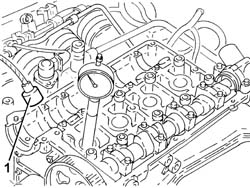
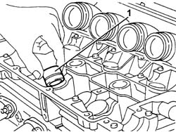

1036H54 HYDRAULIC TAPPET (ONE) - REPLACED WITH CAMSHAFT REMOVED
- Path
- Procedures > 10 ENGINE UNIT > 1036 TIMING SYSTEM > 1036H TAPPETS AND ROCKER SHAFTS > 1036H54 HYDRAULIC TAPPET (ONE) - REPLACED WITH CAMSHAFT REMOVED
- Kind
- repair procedure (removal / refitting; the operation number is the code)
- Applies to
- engines: 1.8 T.SPARK, 2.0 JTS, 3.2 V6; all production periods
- Interactive page
- https://sloeber94.github.io/elrnDB-aGt/en/#/125000993
Applies to: engines: 2.0 JTS; all production periods
 Removing
Removing
 Refitting
Refitting1. Remove the relevant hydraulic tappet using an appropriate magnetic tool

Applies to: engines: 2.0 JTS; all production periods
Refitting
RemovingLubricate with engine oil, then place the hydraulic tappet back in its housing.
Applies to: engines: 3.2 V6; all production periods
Removing
Refitting1. Withdraw and remove the hydraulic tappet to be replaced from its housing.

Applies to: engines: 3.2 V6; all production periods
Refitting
RemovingLubricate with engine oil, then place the new hydraulic tappet back in its housing.
Applies to: engines: 1.8 T.SPARK; all production periods
Removing
RefittingRemove the relevant hydraulic tappet using an appropriate magnetic tool
Applies to: engines: 1.8 T.SPARK; all production periods
Refitting
RemovingLubricate with engine oil, then place the hydraulic tappet back in its housing.